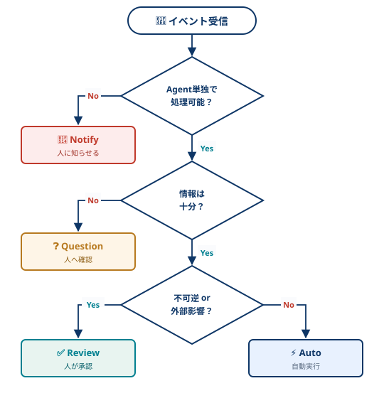

LLM101
2026年04月22日
人が毎回話しかけるのではなく，イベントストリームを常時監視するエージェント
従来のチャット型 = 人の起動待ちで並列性なし
アンビエント型 = イベント駆動で並列処理可能
起動の仕組み
処理の特徴
イベント検知 → 判断 → 自動実行 or 人に相談 → 長期メモリで学習
イベント発生
Agentが検知・判断
自動実行 or 人に相談
長期メモリで学習
REMARKS: チャット型との違いをフロー視点で整理1
すべてを自動化しない，人の判断を組み込む3つの型
🔔 Notify（通知）
例: 受信箱のDocuSign書類
❓ Question（質問）
例: この会議に出席しますか？
✅ Review（承認）
例: 送信前のメール草稿
3段階の判定で Notify / Question / Review / 自動実行 に振り分け
意思決定フロー

4パターンの選択基準
🔔 Notify: 重要なイベントを知らせる
ユーザーが判断すべき事実を通知（Agentは特段アクションは取らない）
❓ Question — 情報不足
処理は可能だが判断に必要な情報が欠けている．憶測せず人に聞く
✅ Review — 不可逆・外部影響
情報は十分だが失敗が取り返せない操作（送信・決済等）は人が承認
⚡ 自動実行 — 可逆 + 情報十分
失敗しても戻せる & 必要情報が揃う操作は人を介さず自走
LangGraphが永続化・HITL・長期メモリ・Cronを内蔵
LangGraphが提供するランタイム機能
regmonkey_abstract_summary:
title_fontsize: 1em
bullet_fontsize: 0.8em
keystat_fontsize: 0.8em
children:
- title: 永続化
description:
- 長時間動作する状態を保存
- 再起動・クラッシュにも耐える
width: [25,75]
- title: HITL
description:
- Notify / Question / Review をAPIで表現
- 中断・再開可能なワークフロー
width: [25,75]
- title: 長期メモリ
description:
- 過去の判断・回答を蓄積
- 次回以降の自動判断精度を改善
width: [25,75]
- title: Cron
description:
- 定期的なイベントを自前で発火
- 外部イベントがない時も動ける
width: [25,75]Agent Inboxによる対話集約
複数エージェントからの通知を一元管理
Notify / Question / Review はすべてInboxに集まり，人は1か所で確認・回答できる
人の回答がエージェントへ戻る
Inboxでの承認・回答は長期メモリに蓄積され，次回以降の判断に反映される
エージェントの横断運用が可能
メール対応・カレンダー調整・Slackトリアージ等，複数エージェントを同じInboxで運用できる
CLI + Hooks + Schedule + Subagents でClaude Codeをアンビエント化する
HITL 4パターン → Claude Code機能マッピング
| HITLパターン | Claude Code の実現手段 |
|---|---|
| 🔔 Notify | Stop / Notification Hook で Slack / デスクトップ通知を発火 |
| ❓ Question | AskUserQuestion ツール．Headlessなら Slack DM 等にリレー |
| ✅ Review | Permission Prompt / ExitPlanMode で実行前に人が承認 |
| ⚡ Auto | --dangerously-skip-permissions / allowlist / auto-accept で自走 |
ユースケース例
PRレビューの自動化 (/ultrareview)
GitHub Webhook → Claude Code → マルチエージェント並列レビュー → PR コメント投稿
定期タスクの Headless 実行
claude -p "check open PRs & summarize" を cron で日次実行．結果は Slack に Notify
ビルド監視・自動修復
CI failure → Claude Code が原因解析 → 修正パッチをドラフト PR → 人が Review で承認
Regmonkey Presentation. ©Ryo Nakagami. All rights reserved.